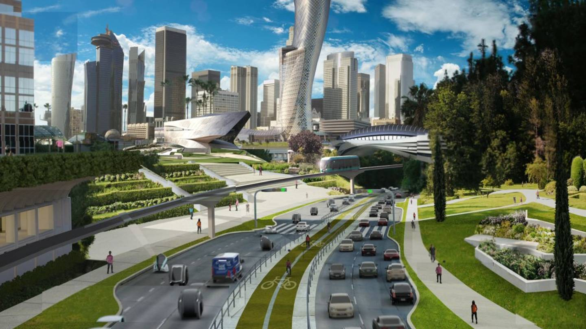

Care sunt previziunile viitorului în tehnologie vâzute de experții lumii?
1. Industria auto se aproprie ușor ușor de prăpasita falimentului
Dacă până nu de mult, lumea își dorea să își achiziționeze un automobil, acesta fiind un lucru necesar pentru fiecare, în viitorul destul de apropriat, datorită tehnologiei, acesta nu va mai face parte din bunurile personale. Bine înțeles că, anul în care se vor întâmpla toate acestea este dependent de infrastructura țării respective și de economie. Sunt de părere că fiecare dintre indivizii acestei planete ne dorim un mijloc de transport rapid și eficient, nu un automobil proprietate personală. Toți dorim să avem acest mijloc de transport la dispoziție atunci când dorim sau când ne este necesar, iar comanda unuia, la fel cum se face în ziua de azi cu TAXI sau UBER este viitorul. În acest fel, industria auto va falimenta în scurt timp, asta pentru că nimeni nu va mai avea nevoie să-şi cumpere o maşină!
Primele astfel de maşini, ce vor fi capabile să se deplaseze fără intervenţia şoferului, au apărut deja din anul 2018 iar din 2020 industria constructoare de maşini se va schimba şi va începe să falimenteze treptat. Nu vei mai avea nevoie de o maşină personală. Tu şi copiii tăi vor putea chema o maşină printr-o aplicaţie mobilă. Maşina va fi fără şofer, iar tu vei achita doar cursa respectivă sau vei avea un abonament tip paușal şi mașina te va duce la destinaţie. În concluzie: nimeni nu va mai avea maşini-proprietate personală, însă toţi vom avea acces la ele.
Această schimbare va transforma oraşele astfel că parcările vor constitui doar 5% din suprafaţa acestora iar 90-95% din „fostele” terenuri de parcare vor deveni parcuri de joacă sau alte spații de dezvoltare, cercetare și inovație pentru populație. Potrivit statisticilor, anual îşi pierd viaţa 1.2 milioane de oameni în accidente rutiere, câte un om la 100.000 de kilometri. Maşinile autonome vor salva anual vieţile a un milion de oameni, iar rata mortalităţii va fi de un om la 10 milioane de kilometri.
Companiile producătoare de maşini tradiţionale din prezent, o mare parte din ele, practic vor înceta să mai existe. Altele, precum Tesla, Google şi Apple vor revoluţiona industria auto, construind nişte calculatoare inteligente pe roţi. În prezent o mulţime de ingineri de la Volkswagen şi Audi care sunt îngroziţi de Tesla şi de posibilităţile pe care le are caută soluții pentru a se adapta noilor provocări. Odată cu apariţia automobilelor autonome asigurările auto vor deveni iniţial de 100 de ori mai ieftine, iar ulterior această afacere va dispărea complet, asta pentru că va exista comunicare între maşini, fapt care va duce la prevenirea accidentelor rutiere.
2. Precum industria auto, aceeași soartă o vor avea și agențiile imobiliare.
Așa cum știm, cetățenii români sunt printre cei mai mari proprietari din Europa și nu numai. Înafară de noi, majoritatea oamenilor doresc să fie cât mai mobili și își doresc o viață cât mai frumoasă și să lucreze de acolo de unde le place și se simt bine. Ei bine, cu o astfel de viziune, chiria o să fie în top pentru că nu te leagă de nimic și nu-ți dă altă bataie de cap. Nimeni nu îşi va mai cumpăra o locuinţă şi asta pentru că se va putea munci în timpul călătoriilor şi astfel oamenii vor căuta mereu un loc mult mai frumos. Oraşele vor fi silenţioase pentru că vor fi maşini electrice. Respectiv vor fi mai curate şi va fi mai uşor de locuit în ele. Energia electrică se va ieftini considerabil din cauză că nu va exista un acces limitat la energia solară. Fiecare o va putea produce individual (prin achiziționarea unor panouri solare, de exemplu). Împreună cu energia electrică se va ieftini şi apa. Desalinizarea ei are nevoie în prezent de 2 kWh şi costă 0.25 cenţi pe metru cub (medie preţ global).
3. Medicina și viitorul tehnologiei în medicină
Vă mai aduceți aminte de Data din Star Trek? Sau de aparatura digitală a ”viitorului SF” ce scana corpul și oferea un raport bazat pe scanning referitor la sănătatea persoanei și eventual tratamentul corespunzător? Ei bine, acest ”viitor SF” este deja aici. Tricorder X a fost deja lansat și ajută în domeniul medicat, atât medicii cât și pacienții. Un mecanism digital similar atât prin denumire, cât şi prin funcţionalitate unuia din filmele Star Trek. El va analiza prin smartphone retina, o mostră de sânge şi respiraţia. Astfel se vor face analizele, mult mai ieftin, mai rapid şi cu o precizie maximă. Respectiv, în câţiva ani va dispărea o parte însemnată a sistemului medical (recoltare şi interpretare analize).

4. Printing și viitorul tehnologiei în printing
Dacă până nu cu mult timp în urmă Imprimantele 3D erau ceva woow, azi sunt multe companii ce deja le-au achiziționat și le folosesc în producție. Acestea vor revoluţiona lumea. Peste doar câțiva ani, fiecare îşi va putea permite una. Cea mai ieftină şi calitativă costând 400 de dolari. Acestea vor lucra şi de 100 de ori mai rapid. Imaginaţi-vă că la sfârşitul acestui an apar telefoane cu funcţie de scanare 3D. Astfel, vă veţi putea scana picioarele şi respectiv vă veţi putea scoate la imprimantă încălţămintea dorită. În prezent în China există deja suprafeţe imobiliare imprimate 3D, iar unele companii produc cu imprimanta 3D piese pentru avioane. Până în 2027, 10% din tot ce se va produce va fi imprimat 3D.
Dacă aveţi în prezent idei de business, nu le începeţi dacă nu funcţionează în acord şi relaţie cu smartphone-ul. De asemenea, ideile de afaceri care au avut succes în secolul XX, nu îl vor mai avea în secolul XXI. 70-80% din job-urile actuale vor dispărea în următorii 20 de ani. Vor apărea altele noi, dar nu se cunoaşte dacă vor fi suficiente. Vom avea în viitor fermieri-roboţi la 100 de dolari bucata. Vor munci în locul nostru, iar acest lucru va revoluţiona agricultura mai ales în ţările din lumea a 3-a (gen cele din Africa). Aeroponica, cultivarea plantelor fără sol şi practic „în aer”, se va dezvolta foarte mult. De asemenea, pe piaţă vor fi aduse produse alternative care vor conţine mai multe proteine decât carnea obişnuită, cei drept, făcute din insecte. Până în 2020 vor exista aplicaţii care vor detecta dacă minţim sau vrem să înşelăm pe cineva. Doar imaginaţi-vă cum va afecta asta campaniile electorale de exemplu. Moneda electronică, bictoin-ul, ar putea deveni monedă internaţională cu toate că acum este într-un declin major, dar acest lucru ajută la stabilizarea acesteia. Până în 2036 ar trebui să trăim în medie 100 de ani. Din prezent, în fiecare an, durata medie de viaţă creşte cu 3 luni. În 2020, 70% din oameni vor avea câte un smartphone, respectiv acces la educaţie de calitate. În Africa şi în Asia se vând deja telefoane cu 10 dolari bucata. În viitor toţi copii din lume vor avea acces la învăţământ superior şi practic gratuit.